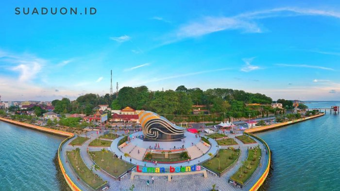
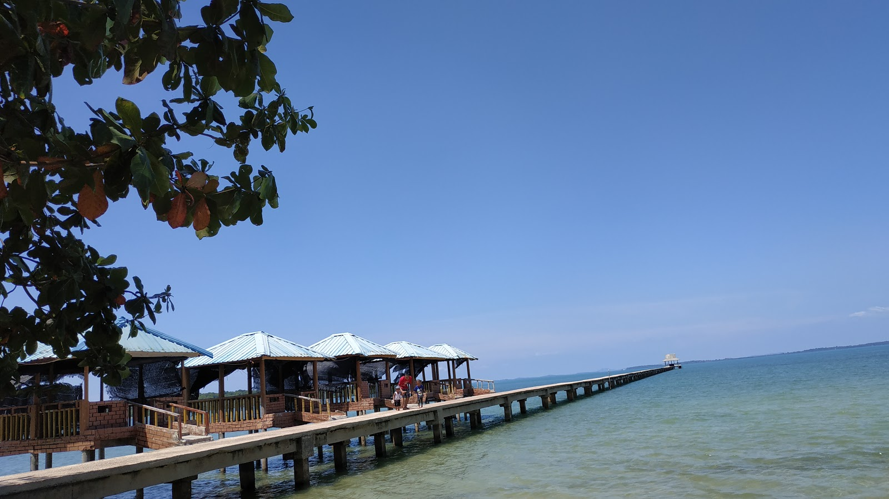
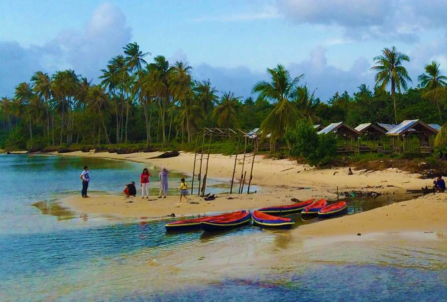
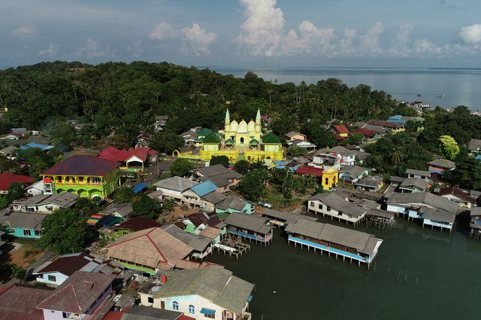
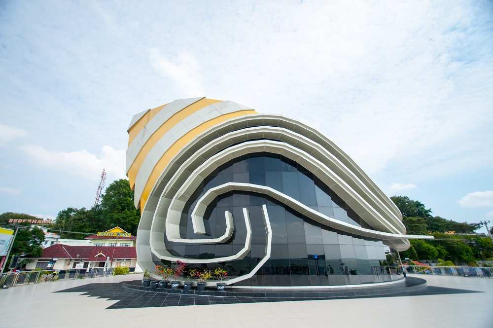
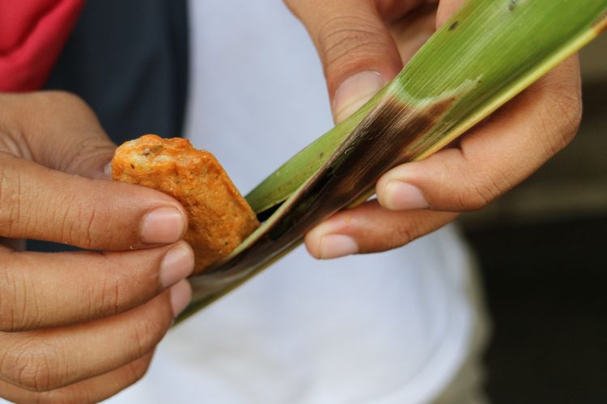
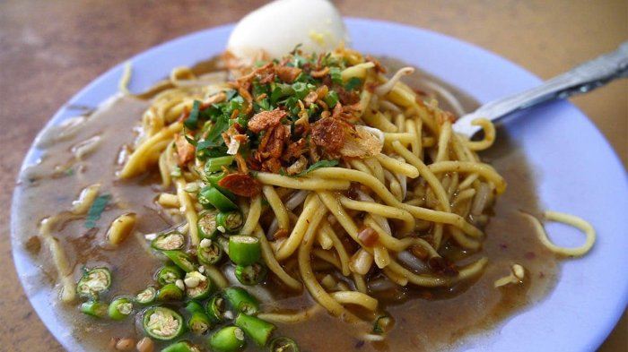

Tanjungpinang atau Tanjung Pinang (disingkat Tg. Pinang) adalah ibu kota dari Provinsi Kepulauan Riau, Indonesia. Kota ini terletak di Pulau Bintan dan beberapa pulau kecil seperti Pulau Dompak dan Pulau Penyengat, dengan koordinat 0º5' LU dan 104º27' BT. Kota Tanjungpinang dahulunya adalah pusat pemerintahan Kesultanan Riau-Lingga. Sebelum dimekarkan menjadi kota otonom, Tanjungpinang adalah ibu kota Kabupaten Kepulauan Riau (sekarang Kabupaten Bintan). Kota ini juga awalnya adalah ibu kota Provinsi Riau (meliputi Riau daratan dan kepulauan) sebelum kemudian dipindahkan ke Kota Pekanbaru.
Kota ini memiliki cukup banyak daerah pariwisata seperti Pulau Penyengat yang hanya berjarak kurang lebih 2 mil dari Pelabuhan Sri Bintan Pura, Pantai Trikora dengan pasir putihnya terletak kurang lebih 65 km dari kota, dan Pantai Buatan yaitu Tepi Laut yang terletak di garis pantai pusat kota sebagai pemanis atau wajah kota (waterfront city)
Pelabuhan Laut Tanjungpinang di Sri Bintan Pura memiliki kapal-kapal jenis feri dan feri cepat (speedboat) untuk akses domestik ke pulau Batam dan pulau-pulau lain seperti Kepulauan Karimun dan Kundur, serta kota-kota lain di Riau. Pelabuhan ini juga merupakan akses internasional ke Malaysia dan Singapura.
Geografis
Sebagian wilayah Tanjungpinang merupakan dataran rendah, kawasan rawa bakau, dan sebagian lain merupakan perbukitan, sehingga lahan kota sangat bervariasi dan berkontur
Iklim
Kota Tanjungpinang maupun Pulau Bintan keseluruhan beriklim tropis dengan temperatur 23 °C – 34 °C. Tekanan udaranya berkisar antara 1.010,2 mbs dan 1.013,7 mbs.
Musim
Secara resmi memiliki musim kemarau dan musim penghujan. Tidak ada perbedaan musim yang mencolok di daerah ini. Hujan dapat turun sepanjang tahun. Namun setiap akhir sampai dengan awal tahun terjadi "Angin Utara" yang sangat berbahaya dengan gelombang yang sangat kuat.
Sejarah
Berdasarkan Sulalatus Salatin, Tanjungpinang merupakan bagian dari Kerajaan Malaka. Setelah jatuhnya Malaka ke tangan Portugal, Sultan Mahmud Syah menjadikan kawasan ini sebagai pusat pemerintahan Kesultanan Malaka. Kemudian menjadi pusat pemerintahan Kesultanan Johor, sebelum diambil alih oleh Belanda setelah mereka menundukan perlawanan Raja Haji Fisabilillah tahun 1784 di Pulau Penyengat.
Pada masa Hindia Belanda, Tanjungpinang merupakan pusat pemerintahan Karesidenan Riouw. Kemudian di awal kemerdekaan Indonesia, menjadi ibu kota Provinsi Riau. Pada tahun 1957, Tanjungpinang menjadi ibu kota Provinsi Riau. Namun dua tahun kemudian ibu kota propinsi itu dipindahkan ke Pekanbaru.[4] Setelah itu statusnya menjadi Kota Administratif hingga tahun 2000. Berdasarkan UU Nomor 5 Tahun 2001, pada tanggal 21 Juni 2001 statusnya ditingkatkan menjadi Kota Tanjungpinang. Pusat pemerintahan yang semula berada di pusat Kota Tanjungpinang, kemudian dipindahkan ke Senggarang (bagian utara kota).[5] Hal ini bertujuan untuk pemerataan pembangunan serta mengurangi kepadatan penduduk yang selama ini berpusat di Kota Lama (bagian barat kota). Pada tahun 2002, Kota Tanjungpinang kembali menjadi ibu kota provinsi, yakni Provinsi Kepulauan Riau
Tempat Wisata

Pantai Tanjung Siambang
Pantai lainnya yang tak kalah menawan adalah Pantai Tanjung Siambang. Pantai ini berada di Pulau Dompak yang merupakan pusat pemerintahan Provinsi Kepulauan Riau. Pulau ini dihubungkan dengan dua buah jembatan dengan daratan utama Kota Tanjungpinang di Pulau Bintan.
Pantai ini menjadi salah satu destinasi wisata yang terbilang aman untuk anak karena jauh dari ombak besar. Terdapat satu dermaga menjorok ke tengah lautan yang menghubungkan masyarakat ke pulau-pulau kecil di sekitarnya. Pantai Tanjung Siambang juga menjadi tempat perhelatan Festival Bahari Kepri setiap tahunnya.

Pantai Impian
Salah satu pantai yang paling populer di Tanjungpinang adalah Pantai Impian. Pantai ini menawarkan keindahan pasir putih dengan pemandangan yang langsung menghadap ke pusat Kepulauan Riau. Fasilitas yang dimiliki pantai ini juga lengkap mulai dari resort, tempat makan, dan tempat bersantai di pinggir pantai.

Pulau Penyengat
Pulau Penyengat merupakan pulau kecil yang berjarak kurang lebih 2 km dari pusat kota Tanjungpinang. Di Pulau Penyengat, terdapat situs penting bagi perkembangan budaya melayu serta situs penyebaran Islam di pesisir Riau. Salah satu ikon wisata di pulau ini adalah Masjid Sultan Riau. Tidak jauh dari Masjid Sultan Riau, terdapat makam raja-raja Riau.

Gedung Gonggong
Gedung Gonggong berada di kawasan Laman Boenda Tepi Laut. Sekilas gedung ini menyerupai gedung keong mas yang ada di Taman Mini. Gedung Gonggong didesain menyerupai siput laut, dengan dinding yang terbuat dari kaca gelap.
Gedung ini merupakan pusat informasi pariwisata Kepri sekaligus museum kebudayaan. Di dalamnya terdapat berbagai informasi tentang Tanjungpinang dan toko oleh-oleh yang menjajakan makanan dan kerajinan khas Tanjungpinang.
Makanan Khas
Gonggong

Gonggong adalah sejenis kerang yang hanya bisa ditemukan di Pulau Sumatera, khususnya di Tanjung Pinang. Bentuknya seperti siput, dengan cangkang berwarna putih. Biasanya gonggong diolah hanya dengan cara direbus. Gonggong yang sudah matang lalu dimakan dengan dicocol ke sambal spesial.
Rasa gonggong agak manis, dagingnya yang kenyal memberikan sensasi yang menarik. Saat memakan gonggong harus hati-hati. Pasalnya terdapat sejenis kuku yang dijadikan alat kita mengambil daging gonggong dari cangkangnya. Kuku ini berbentuk seperti ekor udang, keras dan tidak bisa dimakan.
Otak-Otak

Otak-otak khas Tanjung Pinang berbeda dengan otak-otak lainnya. Memiliki tiga macam varian pada umumnya, yaitu otak-otak original dengan daging ikan saja, otak-otak pedas yang berwarna merah, dan otak-otak pedas dengan campuran daging sotong.
Mie Lendir

Mi Lendir merupakan salah satu makanan khas Tanjung Pinang yang cukup mudah ditemukan di beberapa warung di penjuru kota.
Disebut mi lendir karena kuah mi yang sangat kental hingga menyerupai lendir. Rasanya sendiri cukup nikmat, ada perpaduan gurih dan manis yang pas.